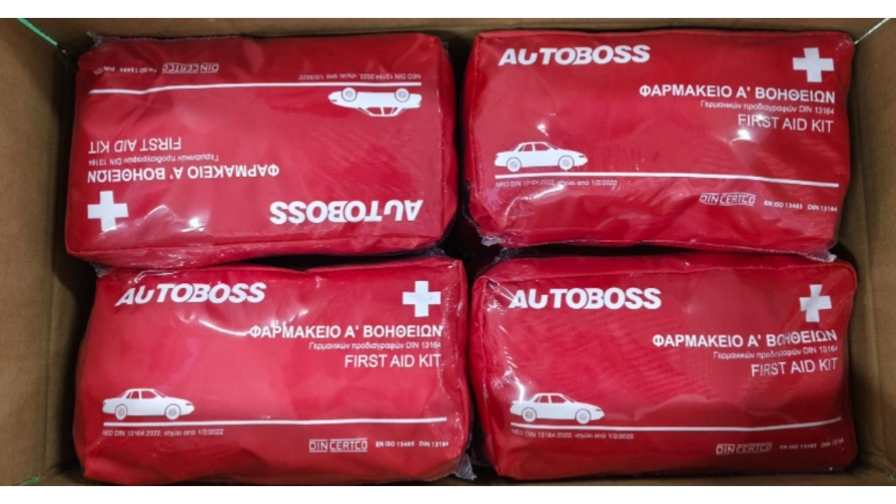
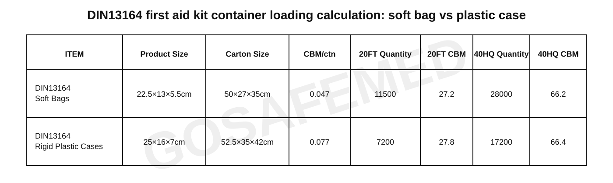

Mitigating Supply Chain Inflation for DIN 13164:2022: Cargo Engineering and Packaging Strategies for B2B Importers
MAY 20, 2026

Securing a manufacturing partner that fulfills the mandatory DIN 13164:2022 bill of materials is only the first checkpoint for European automotive accessory importers and safety PPE distributors. In the current global trade climate, the true profitability of a vehicle first aid kit program is heavily decided by variables far outside the medical sector: geopolitical energy spikes and sea freight optimization.
With escalating tensions in regions like the Middle East directly driving up global crude oil pricing, the downstream impact on plastics manufacturing has been severe. Rigid polypropylene first aid boxes have faced sharp material cost increases. When paired with high ocean freight rates, importing rigid plastic molding means paying premium rates to transport dead volumetric air space inside shipping containers.
To preserve distribution margins while ensuring 100% compliance with updated EU road safety inspection mandates, corporate purchasing managers must evaluate the packaging geometry of their safety inventory.
The Hard Mathematics of Container Yield: Soft Bags vs. Rigid Plastic Cases
Every millimeter of a first aid kit's outer housing dictates your Total Cost of Ownership (TCO) during international logistics transit. By analyzing the container packing density between rigid plastic boxes and streamlined soft bags, the margin optimization becomes a matter of strict mathematics.
Below is the verified logistical comparison for a standard 20FT and 40HQ container layout based on current factory configurations:
- The Rigid Plastic Case Configuration (25 × 16 × 7 cm): Best suited for specialized heavy commercial equipment or industrial machinery fleets requiring high impact resistance. However, a standard master carton (52.5 × 35 × 42 cm) yields a volume of 0.077175 CBM per 20 units. This caps your total shipment capacity at 7,200 units for a 20FT container and 17,200 units for a 40HQ container.
- The Streamlined Soft Bag Configuration (22.5 × 13 × 5.5 cm): Engineered for passenger vehicles, lifestyle overlanders, and high-velocity consumer retail. By utilizing dense, weather-resistant textiles that conform exactly to the internal component geometry, the master carton dimensions are reduced to 50 × 27 × 35 cm, resulting in a significantly compressed volume of 0.04725 CBM per 20 units.
- The Sourcing Advantage: Shifting from rigid plastic cases to space-saving soft bags elevates your cargo capacity to 11,500 units in a 20FT container and 28,000 units in a 40HQ container.

By choosing the soft packaging framework, you achieve a 59% increase in total unit yield per 20FT container and over 62% more inventory per 40HQ layout. This cargo optimization radically drives down your per-unit landed cost, entirely absorbing the raw material inflation caused by current petrochemical volatility.
Customization and Regionalization: Navigating Language Mandates across the EU
While the internal medical components—such as the mandatory Type IIR/FFP2 medical face masks and sterile triangular bandages—are uniform under the DIN 13164:2022 standard, regional communication requirements vary across destination markets.
- The Operational Liability: Importing a standard kit with non-localized instruction sheets or generic exterior labels can result in immediate rejection by localized safety inspection panels or institutional fleet procurement boards in specific EU member states.
- GoSafeMed’s Flexible OEM/ODM Framework: We decouple medical component compliance from packaging localization. Our default factory configurations are supplied with standard, professional English branding to ensure rapid dispatch. For large-scale contract distributions or country-specific rollouts, we provide flexible, project-based customization. Importers can submit localized language text, specialized safety instructions, or regional distributor artwork, which our production team integrates seamlessly before final factory sealing and export stabilization.
Technical Portfolio Readiness for Enterprise Safety Audits
Every cargo layout configuration in our automotive supply chain is designed to pass customs enforcement and enterprise procurement scrutiny without friction:
- Certified Compliance Infrastructure: Fully audited and serialized under CE MDR frameworks, backed by ISO 13485 clinical manufacturing standards.
- Extended Asset Lifespan: Every kit is delivered with a synchronized, validated 5-year shelf life, shielding your warehouse from rapid stock depreciation and extending the replacement cycle for your end-users.
By aligning with a manufacturer that engineers both the medical specifications of the DIN 13164:2022 standard and the structural economics of global maritime containers, you insulate your business from rising material costs while securing maximum distribution margins.
Logistics & Configuration Review: Preparing a high-volume import allocation or bidding on a corporate transit contract? Contact our logistics desk to receive the complete 2026 Automotive Safety Data Sheets, full compliance verification files, and exact pallet weight matrices. Reply with CATALOG to optimize your landed costs today.